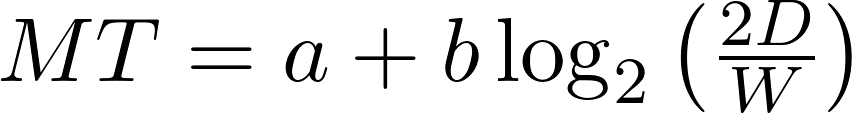
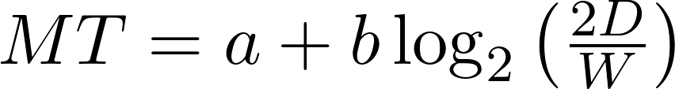

What is Fitts's Law?
Fitts's Law is a fundamental concept in human-computer interaction (HCI) that revolutionized the way designers think about user interface design. Developed by psychologist Paul Fitts in 1954, this law provides a mathematical model for predicting the time required to move a pointing device, such as a mouse or a finger, to a specific target on ascreen. It's a foundational principle that underlies the design of user-friendly interfaces in both software and hardware.

Key Concepts
At the core of Fitts's Law are two key concepts: the "Index of Difficulty" (ID) and "Movement Time" (MT). ID is a measure of the task's complexity and is calculated based on the target's size and distance. A larger target or a closer target results in a lower ID, signifying an easier task. MT, on the other hand, represents the time it takes to complete the pointing movement accurately. The law's formula combines these concepts to predict how long it will take to perform a pointing task.
 

More details on Fitts's Law
Speed-Accuracy Trade-Off
One of the critical implications of Fitts's Law is the trade-off between speed and accuracy. It highlights that as the target size increases, movement speed can also increase. However, this may come at the cost of reduced accuracy. Conversely, when aiming for smaller targets, the user may be more accurate, but the movement will take longer. This trade-off is central to designing interfaces that balance the need for speed and precision.
Predictive Model
Fitts's Law provides a predictive model for estimating the time required for a user to complete a pointing task. This model uses logarithmic functions to relate target size and distance to movement time. Designers can apply this model to make informed decisions about how to optimize the size and placement of interactive elements in an interface. By adjusting these factors, designers can reduce movement time and enhance the user experience.
Logarithmic Relationship
The Law follows a logarithmic relationship, meaning that doubling the target's size doesn't halve the movement time. Instead, the impact of target size diminishes as it grows larger. This logarithmic nature is a key insight for designers, as it emphasizes the importance of larger targets for quick interactions and highlights the diminishing returns of continuously increasing target size.
Practical Applications
In practice, Fitts's Law plays a crucial role in user interface design. It guides designers in determining the oof interactive elements like buttons and icons. By adhering to the principles of Fitts's Law, designers create interfaces that are both efficient and user-friendly, reducing errors and user frustration.
Constraints
While Fitts's Law offers valuable insights, it's essential to consider various constraints when applying it to design. Factors such as user motor skills, device limitations, and user preferences can influence how the law is implemented in interface design. Effective design takes into account these real-world variables to create interfaces that accommodate a diverse range of users.
Improving User Experience
By applying Fitts's Law principles, designers can significantly improve the overall user experience. Interfaces that adhere to the law's guidelines are more efficient, reducing the cognitive load on users and minimizing the chances of errors during interactions. This, in turn, leads to more satisfied users and a more successful product.
Extensions
Fitts's Law continues to evolve and find relevance in emerging technologies. Its principles have been extended to ttions, multi-modal interfaces, and novel input methods like touchscreens and voice recognition. These extensions demonstrate the enduring significance of Fitts's Law in the ever-changing landscape of HCI.
Empirical Validation
Fitts's Law isn't just a theoretical concept; it's been extensively validated through empirical studies and real-world applications. Researchers and designers alike rely on the law's principles to create interfaces that are both efficient and user-centric. Its enduring influence is a testament to its empirical validity and practicality.